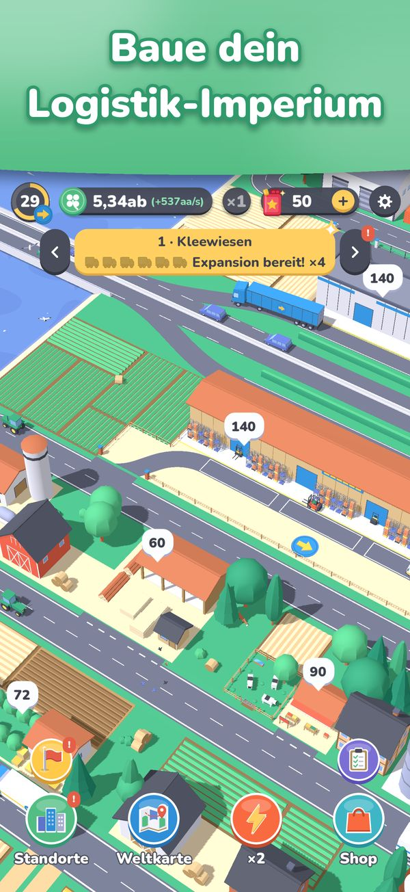
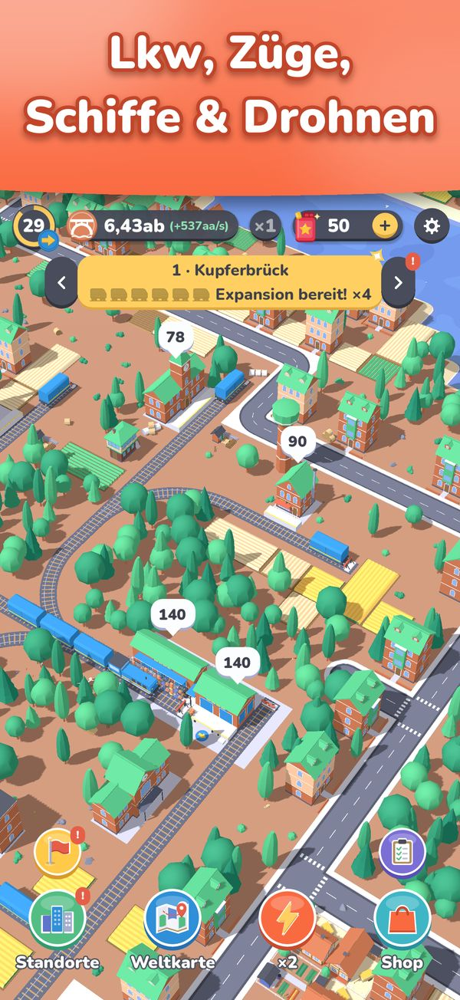
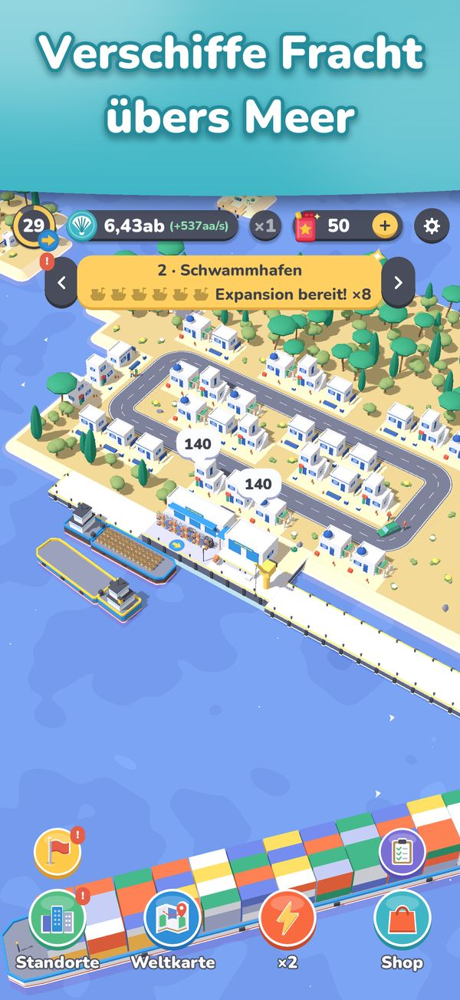
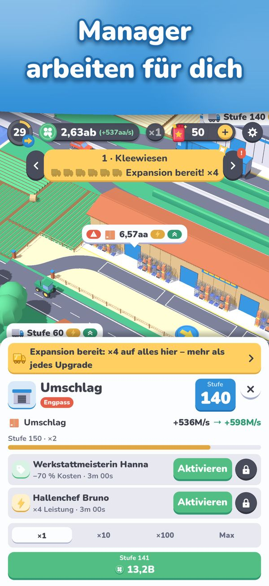
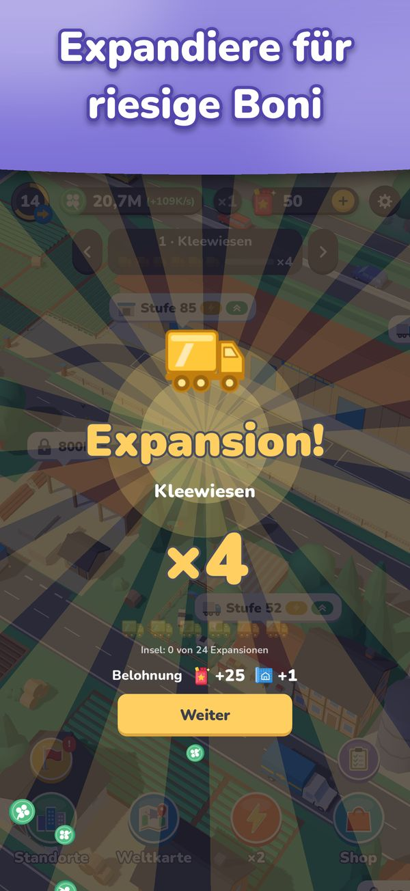
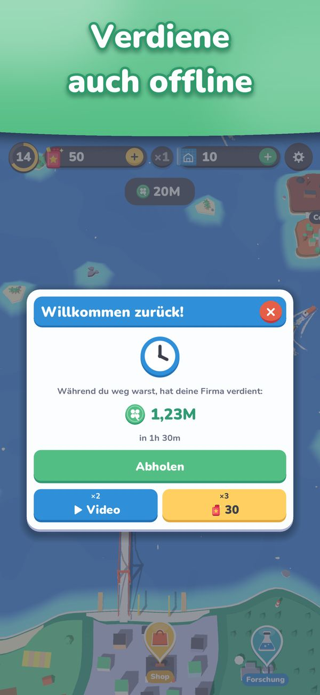

Ein Idle-Aufbauspiel rund um Spedition und Logistik
Idle Transport Corp ist ein Idle-Logistikspiel fürs iPhone. Du gründest eine kleine Spedition und baust sie über eine ganze Inselwelt hinweg zu einem Logistik-Imperium aus, mit Lkw, Güterzügen, Schiffen und Drohnen.
Jede Fuhre bringt Geld. Das steckst du in schnellere Fahrzeuge, neue Kunden und neue Standorte, und du stellst Manager ein, die alles am Laufen halten. Eine entspannte Wirtschaftssimulation: Du triffst die Entscheidungen, deine Manager erledigen die Routine, und deine Firma verdient weiter, während du weg bist.
So wird gespielt: abholen, umschlagen, versenden
Jeder Standort ist eine kleine Lieferkette mit drei Stationen:
- Abholung. Deine Fahrzeuge fahren zu deinen Kunden und laden ihre Waren. Jeder Standort hat acht Kunden, vom Hofladen bis zum Hochofen.
- Umschlag. Dein Speditionshof bringt die Fracht in den Versand.
- Versand. Der Fernverkehr bringt sie zum Festland. Erst der Versand bringt Geld.
Die Kette ist nur so schnell wie ihre langsamste Station. Das Spiel markiert sie als Engpass. So findest du das beste Upgrade sofort. Auf den Meilenstein-Stufen (10, 25, 50, 100 und weiter) verdoppelt sich die Leistung einer Station. Dein Fuhrpark beginnt mit einem einzigen Lastenrad und wächst über Transporter und Lkw bis zum Road Train.
Screenshots






Vier Inseln: Lkw, Güterzüge, Schiffe und Drohnen
Jede Insel hat ihr eigenes Verkehrsmittel, ihren eigenen Stil, ihre eigene Musik und ihre eigene Währung. Läuft eine Insel gut, kaufst du mit ihrem Geld die nächste. Auf jeder Insel baust du vier Standorte auf.
Clover Island: Lkw und Road Trains
Deine erste Insel. Lkw fahren zwischen Bauernhöfen, Dorf, Gewerbegebiet und Kleinstadt, und deine Speditionshöfe liegen direkt an der Autobahn.
Copperbridge Isles: Güterzüge auf der Werksbahn
Vier kleine Inseln, verbunden durch Brücken. Güterzüge bringen Backstein, Salz, Stahl und Öl.
Seagull Isles: Boote und Schiffe
Boote und Schiffe fahren zwischen kleinen Mittelmeerinseln.
Anchor City: vom Lastenrad bis zur Lieferdrohne
Lieferungen mitten in der Großstadt. Deine Kuriere starten auf Lastenrädern und liefern am Ende mit Drohnen.
Verkehr auf den Straßen, Fußgänger, Rehe, Möwen und Wind in den Bäumen machen jede Insel lebendig.
Manager halten deine Stationen am Laufen
Jede Station hat Platz für zwei Manager. Stellst du einen ein, läuft die Station von selbst, ganz ohne Tippen. Dazu haben Manager Fähigkeiten, die du für ein paar Minuten zündest, etwa ×4 Leistung oder deutlich günstigere Upgrades; danach brauchen sie eine Pause. Beförderst du sie, werden ihre Fähigkeiten stärker und halten länger.
Expansion: Neustart für riesige Multiplikatoren
Hat ein Standort alle Kunden, kannst du ihn expandieren. Er fängt von vorn an, bringt danach aber ein Vielfaches, bis zu ×158. Jeder Standort lässt sich sechsmal expandieren, jede Expansion bringt Supertreibstoff und Blaupausen, und deine Forschung bleibt. Die Hilfe im Spiel sagt es kurz: Sobald du eine Expansion bezahlen kannst, mach sie!
Forschung, Ziele und Tagesbelohnungen
Im Campus steckst du Blaupausen in 20 Forschungen aus fünf Bereichen: Fuhrpark, Hof, Personal, Verwaltung und Antrieb. Die Forschung bringt größere Ladeflächen, schnellere Stapler, günstigere Upgrades und mehr Offline-Zeit. Geforscht wird in Laboren, auch während du weg bist, und das Ergebnis gilt auf jeder Insel.
Ziele führen dich Schritt für Schritt über jede Insel und bringen Supertreibstoff oder Blaupausen. Die Tagesbelohnung füllt einen Kalender mit sieben Tagen; verpasst du einen Tag, behältst du deinen Platz. Dazu gibt es ein Tagesangebot.
Wöchentliche Events mit eigenen Welten
Zeitlich begrenzte Events öffnen eigene kleine Welten. Jede Woche startet ein neues und läuft fünf Tage, von Mittwoch bis Sonntag; Feiertage wie Weihnachten und Silvester haben eigene Events. Jedes Event bringt eigene Fahrzeuge, eine eigene Währung, eigene Musik und eigene Belohnungen mit. Die Welten reichen von der Lavahöhle über das Solarstädtchen der Radler und den Asteroidengürtel bis zur Piratenbucht. Der Hauptpreis ist eine neue Firmenfarbe und dauerhaft +10 % Einkommen, als Trophäe in deinem Trophäenraum.
Offline-Ertrag: Deine Spedition arbeitet weiter
Schließ das Spiel, und deine Manager arbeiten weiter: Stationen mit Manager verdienen in deiner Abwesenheit weiter, anfangs mit halbem Tempo. Angerechnet werden zunächst bis zu zwei Stunden; die Forschung Nachtschicht erhöht das auf bis zu sieben. Kommst du zurück, holst du ab, was deine Firma verdient hat, oder verdoppelst es per Video oder verdreifachst es mit Supertreibstoff.
Und mach die Firma zu deiner: Gib ihr einen Namen, ein Logo und zwei Farben, in denen deine Fahrzeuge fahren.
Häufige Fragen
Ist Idle Transport Corp kostenlos?
Ja, Laden und Spielen kosten nichts. Optionale In-App-Käufe bieten Supertreibstoff (die Premium-Währung) und Pakete sowie zwei einmalige Upgrades: „Für immer ×2“ und „Werbefrei“. Abos gibt es keine, und Supertreibstoff verdienst du auch im Spiel.
Gibt es Werbung?
Keine Zwangswerbung. Ein Video läuft nur, wenn du es für eine Belohnung startest, etwa einen ×2-Boost, Supertreibstoff oder doppelten Offline-Ertrag. Die Videos kommen von Google AdMob; im EWR und im Vereinigten Königreich fragt das Spiel vorher nach deiner Einwilligung. Mit „Werbefrei“ bekommst du die Belohnungen ohne Video.
Wie funktioniert das Spiel?
Fahrzeuge holen Waren ab, dein Hof schlägt sie um, und der Versand bringt sie zum Festland. Erst der Versand bringt Geld. Bau zuerst die langsamste Station aus und stell Manager ein. Im Spiel: Einstellungen (Zahnrad) › Hilfe.
Verdiene ich weiter, wenn das Spiel geschlossen ist?
Ja, Stationen mit Manager arbeiten weiter. Anfangs rechnet das Spiel bis zu zwei Stunden an; Forschung verlängert das.
Auf welchen Geräten läuft das Spiel?
Idle Transport Corp ist fürs iPhone gemacht und braucht iOS 17 oder neuer.
Welche Sprachen spricht das Spiel?
14: Deutsch, Englisch, Spanisch, Französisch, Italienisch, Niederländisch, Polnisch, brasilianisches Portugiesisch, Türkisch, Russisch, Japanisch, Koreanisch und Chinesisch (vereinfacht und traditionell). Umstellen kannst du sie unter Einstellungen › Sprache.
Wo liegt mein Spielstand? Kann ich auf ein neues iPhone umziehen?
Dein Spielstand liegt nur auf deinem Gerät (es gibt kein Konto). Er ist Teil deines iPhone-Backups (iCloud oder Computer): Richtest du ein neues iPhone aus einem Backup ein, kommt dein Spielstand mit. Einen Abgleich zwischen zwei Geräten gibt es noch nicht.
Wie stelle ich Käufe wieder her?
Einstellungen › Käufe wiederherstellen. Das holt „Für immer ×2“ und „Werbefrei“ zurück. Supertreibstoff und die Pakete werden beim Kauf verbraucht und lassen sich nicht wiederherstellen (eine Regel des App Store für Verbrauchsartikel).
Ein Kauf ist nicht angekommen. Was kann ich tun?
Beende das Spiel ganz und starte es neu. Noch offene Käufe werden beim Start nachgeliefert. Fehlt er dann immer noch, schreib uns mit Datum und Produkt (bitte nie Zahlungsdaten schicken). Erstattungen laufen über Apple: reportaproblem.apple.com.
Welche Daten sammelt das Spiel?
Es gibt kein Konto, und dein Spielstand bleibt auf deinem Gerät. Käufe laufen über Apple; Zahlungsdaten sehen wir nie. Drei Partnerdienste übernehmen die Videos (Google AdMob), Absturzberichte (Sentry) und eine Spielstatistik (GameAnalytics; im EWR, im Vereinigten Königreich und in der Schweiz nur mit deiner Einwilligung). Details: Datenschutzerklärung.
Wie fange ich von vorn an?
Einstellungen › Spielstand löschen. Das löscht deinen Fortschritt auf diesem Gerät endgültig; „Für immer ×2“ und „Werbefrei“ kannst du danach wiederherstellen.
Neu im Spiel
Version 1.2.1 (November 2026)
- Tag und Nacht: Ein ganzer Tag vergeht in 24 Minuten, nachts leuchten die Fenster und alle Fahrzeuge fahren mit Licht. Deine liebste Tageszeit hältst du in den Einstellungen an.
- Lebendige Inseln: Wolken- und Fahrzeugschatten, Wellen an der Küste, Leute bei der Arbeit in den Höfen.
- Die Weltkarte zeigt das Wahrzeichen jeder Insel, das Flottenbuch hat neue Fahrzeugbilder und die Leiste oben trägt die Farben deiner Insel.
- Engpässe sieht man auch ganz herausgezoomt, und der Wechsel zwischen den Inseln geht schneller.
Version 1.2.0 (November 2026)
- Hofausbau: Bei jeder Expansion baust du den Hof des Standorts aus, mehr Ertrag oder mehr Tempo, und jede Wahl steht im Hof. Im Event wächst der Hof mit Umschlag und Versand.
- Charterkontor: Fahrzeuge fahren 1, 4 oder 12 Stunden Charter und kommen mit Blaupausen, Supertreibstoff oder Boost zurück.
- Flottenbuch: jedes Fahrzeug deiner Firma mit Bild, Sätzen und Stempeln, die Supertreibstoff bringen.
- Neuer Look: jedes Fenster im Stil seiner Insel, wärmeres Licht und klares Wasser.
- Die Zielkette bis zur sechsten Expansion, „Alle starten“ und „Alle einstellen“ in der Übersicht, Benachrichtigungen, acht neue Firmenfarben.
Support
Fragen, Probleme oder Ideen? Schreib uns. Wir antworten meist innerhalb weniger Tage:
E-Mail: mariohaesler@protonmail.com
Nenn uns bitte dein Gerätemodell, die iOS-Version und die Spielversion (unten in den Einstellungen).
Mehr von Cavebeer Entertainment
- Idle Monster Forge: Deine Monster graben Gold für dich, auch wenn du nicht spielst.
- Colorwall: entspanntes Malen nach Zahlen für Erwachsene.
Alle Spiele und Apps: Cavebeer Entertainment